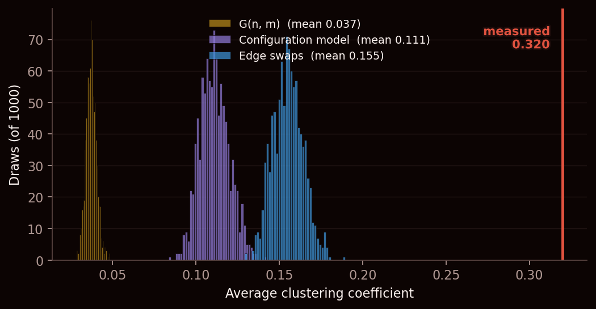
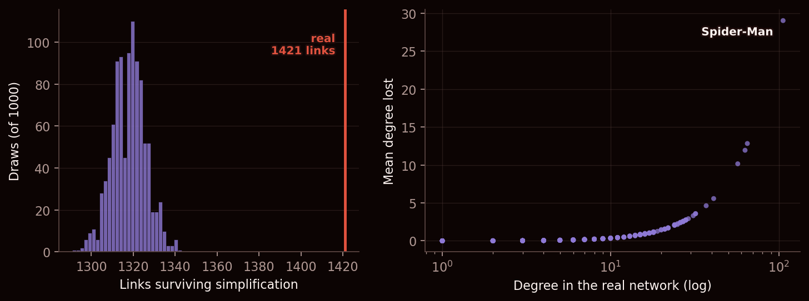
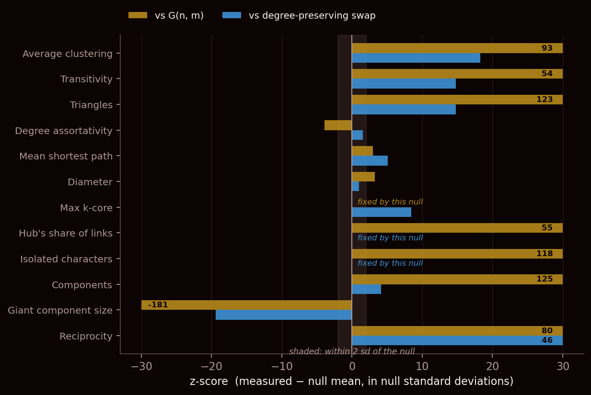
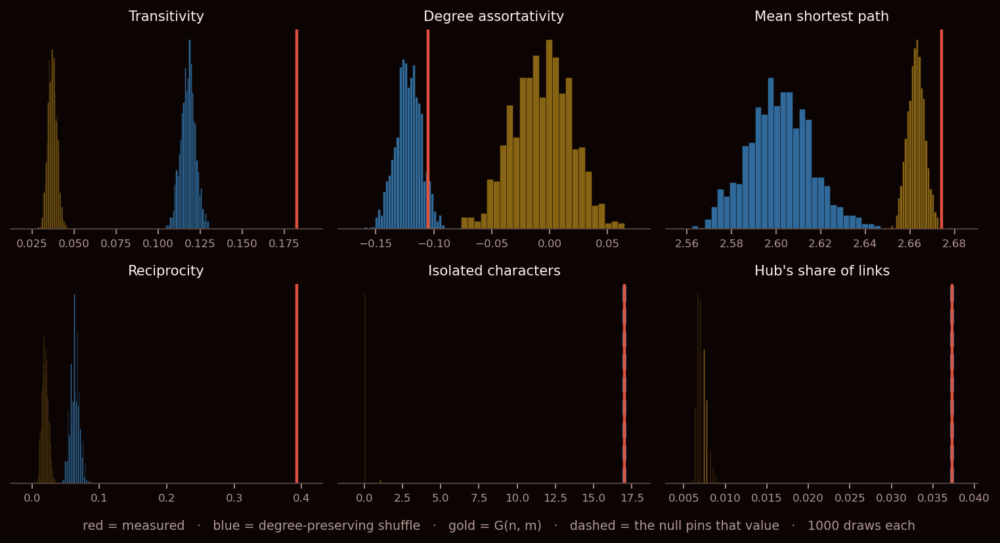

What we asked
A quick reminder of what we are working with. We have 303 Marvel characters who have a Wikipedia article, and we drew a line between two of them whenever one article links to the other. That gives us a map of who is connected to whom — 1,784 links in total. Last week we measured things on that map. This week we tried to work out which of those measurements actually mean anything.
Here is the problem. Take any interesting-sounding fact: Marvel characters are clustered, meaning that if two characters both link to Spider-Man, they are unusually likely to link to each other as well. Friends of friends are friends. That sounds like a finding about how stories are written.
But it might not be a finding at all. Spider-Man alone is linked to by 106 of the other 302 characters. When one person is that famous, a lot of connections get funnelled through him, and any map with such lopsided fame will look clustered — even one where the links were thrown down completely at random. The clustering might be a consequence of the fame, not of the storytelling.
So the real question for this week is: which of our numbers are about Marvel, and which are just about who happens to be famous?
The trick: a thousand alternate universes
There is a clean way to separate the two, and it is essentially the multiverse.
We take our map and open a portal to an alternate timeline, under one strict rule: everybody keeps their exact fame. Spider-Man still has 106 connections in the alternate universe, Hulk still has 65, and the hundred-odd characters with two or three connections still have two or three. What changes is only who those connections point at — they get dealt out at random. Then we measure the same thing over there, and repeat the whole business a thousand times.
Now the logic does the work for us:
- If our number looks perfectly ordinary among those thousand universes, then fame alone explains it. It is not a fact about Marvel; it is a fact about the fame counts, and we would have got it in any universe built from them.
- If not one of the thousand universes gets anywhere near our number, then something in our universe is genuinely doing it. That is a real finding.
We also built a second, much looser kind of universe for comparison, where characters do not even keep their fame — the only thing preserved is the total number of links, dealt out completely blind. This is the comparison that gets published most often, and as you will see below, it is far too easy to beat.
We report each result two ways. The distance says how far our value sits from the average of the shuffled universes, measured in units of how much those universes wobble on their own; anything past about 2 is outside the normal range of variation, and 18 is nowhere near it. And we simply count how many of the thousand universes matched or beat our value — if the answer is "none of 1,000", our universe is doing something they cannot.
What we did
- Built three versions of the map, because different questions need different ones: the main connected mass of 277 characters (for anything about clustering, distances and dense cores); the whole roster of 303 (for counting the loners, who by definition are missing from the connected mass); and the map with arrows kept, since a Wikipedia link points one way and it matters whether the other article links back.
- Wrote each of the twelve measurements as a single piece of code that takes a map and returns a number, then ran our map and every alternate universe through the identical code. Using one code path for both is the only reason we trust the comparison.
- Generated 1,000 alternate universes of each kind. The fame-preserving ones are made by repeatedly picking two links and swapping their endpoints, which cannot change anybody's total (
double_edge_swap, run ten times as many swaps as there are links). The blind ones are drawn from scratch with the same number of links (G(n, m)). - Because we ran a thousand universes, the strongest thing we can ever say is "none of the thousand managed it". We never claim more than that.
- Tried a third, popular way of building the alternate universe as a cross-check — and it gave a different answer. Working out which one was lying took up half of this post.
The headline: the clustering is real
Our map's clustering score is 0.320. In the blind universes, where nobody keeps their fame, it is 0.037 — about nine times smaller. That factor of nine is the number you will see quoted in a hundred write-ups, and it is close to meaningless, because those universes threw away the fame counts along with everything else.
Keep the fame and the comparison gets much more honest. Those universes score 0.155. So roughly half the famous gap between "random" and "real" is simply the fact that Marvel has superstars in it. That half is not a discovery.
The other half is:

Not one of the thousand fame-preserving universes came close to 0.320. So Marvel characters really are more tightly knit than their fame alone requires. What we emphatically have not shown is why: characters appearing in the same comics, sharing a team, or simply being written up by the same editor working through one storyline would all produce this, and we cannot tell those apart from the link map.
For the record, here is the same result in the language a paper would use — the exercise asks for it, and you can safely skip it:
The giant component's average clustering is 0.320. Against 1,000 degree-preserving rewirings of the same graph — the null that holds every character's link count fixed and randomises only who links to whom — the shuffled networks average 0.155 (sd 0.009), putting the observed value 18 standard deviations above the null mean, with no shuffle in a thousand reaching it (p < 0.001). Marvel characters are therefore more clustered than their popularity alone requires, though this says nothing about why.
One of our portals was leaking
There are two standard recipes for "keep everyone's fame, shuffle the rest", and we ran both. They disagreed: 0.111 against 0.155. Since both claim to do the same thing, one of them was breaking its own promise.
It was the popular one, and the reason is almost funny. That recipe works by giving each character a bundle of loose link-ends — 106 of them for Spider-Man — and then tying loose ends together at random. Do that and you inevitably get some links that loop from a character back to themselves, and some pairs joined twice over. Neither is allowed on our map, so you delete them. And the moment you delete them, the fame you promised to preserve is gone.
It is not a small leak, and it does not fall evenly:

Spider-Man arrives in those universes missing 29 of his 106 links. Hulk loses 12.8 of 65, Wolverine 12.0 of 63, Doctor Strange 10.2 of 57. The reason is simple once you see it: the more loose ends you are holding, the more likely two of them get tied to each other, so the superstars are exactly where the illegal links form and exactly where the deleting happens. That recipe quietly shaves the hubs — and a Marvel universe with weaker superstars has less clustering. Hence 0.111 instead of 0.155.
If you use that recipe on any network with a few big hubs, your comparison universe is biased against exactly the structure hubs create, so everything you measure looks more impressive than it is. The swapping method has no such problem: it cannot change anyone's total, ever, because it only ever trades endpoints. Every result below uses swapping.
The full scoreboard

| What we measured | Our universe | Shuffled ones | Distance | Shuffles that matched it | Verdict |
|---|---|---|---|---|---|
| Average clustering | 0.320 | 0.155 | +18.2 | none of 1,000 | Real |
| Transitivity | 0.182 | 0.118 | +14.8 | none of 1,000 | Real |
| Triangles | 1,835 | 1,185 | +14.8 | none of 1,000 | Real |
| Both-ways links | 0.392 | 0.063 | +46.2 | none of 1,000 | Real |
| Size of the main group | 277 | 285.9 | −19.4 | none of 1,000 | Real |
| Densest inner ring | 10 | 9.0 | +8.4 | 14 of 1,000 | Real |
| Average hops apart | 2.674 | 2.602 | +5.1 | none of 1,000 | Real, but tiny |
| Separate groups | 19 | 18.1 | +4.1 | 49 of 1,000 | Too close to call |
| Do the popular link to the popular? | −0.105 | −0.122 | +1.5 | 139 of 1,000 | Just popularity |
| Widest gap in the network | 6 | 5.5 | +1.0 | 447 of 1,000 | Just popularity |
| Spider-Man's share of all links | 3.7% | the same in all 1,000 universes | Can't be tested | ||
| Characters with no links at all | 17 | the same in all 1,000 universes | Can't be tested | ||
Plain-English translations for the less obvious rows: transitivity and triangles are two more ways of asking the friends-of-friends question. Both-ways links counts how often two articles link to each other rather than just one way. Average hops apart is how many steps it takes to get from one character to another. Densest inner ring asks how deep the tightly-connected core goes. Separate groups counts the isolated pockets that never touch the main mass.
Two of those verdicts are deliberately hedged. Average hops apart beats every single shuffle and is still not worth much: 2.674 against 2.602 is a difference of seven hundredths of one step. With a thousand universes we can detect a gap that small, which says more about how many universes we built than about Marvel. Separate groups had 49 of the 1,000 shuffles reach or beat it, right on the conventional borderline, and we are not going to build an argument on a number that would change with a different roll of the dice.
What surprised us: the discovery that wasn't
Here is the one we nearly got wrong.
We measured whether famous characters link to other famous characters, or reach down to obscure ones instead. The answer came out clearly negative: the superstars link downwards. That is a lovely story about a fictional universe — the A-list holds the whole map together by reaching into the C-list — and it fitted beautifully with what we found last week, that the outer rim reaches inwards and the centre never reaches back. We were ready to write it up.
Then we looked at the alternate universes. They do the same thing, slightly more strongly than ours does. 139 of the 1,000 matched or beat our value, which is about as unremarkable as a result can be.

And once you see why, it stops being mysterious. Spider-Man has 106 connections to spend in a population of 277, and only three other characters are even above 55. There is almost nobody at his level for him to connect to, so the overwhelming majority of his links must land on characters far less famous than he is. It is not editorial taste and it is not storytelling. It is counting. Against the easy comparison, where fame is thrown away, this same measurement looks like a solid finding. Against the honest one, it evaporates.
The widest gap in the network falls into the same trap. It takes 6 steps to cross the Marvel universe at its widest, against about 4.4 in the blind universes, which reads like a fact about the shape of the thing. The fame-preserving universes average 5.5, and 447 of the 1,000 hit 6 or more. Nothing to see.
What no shuffle can tell you
Two rows in the table have no distance at all, and that is an honest answer rather than a hole in the analysis.
Spider-Man's share of all links — 3.7% of every connection on the main map runs through him — is simply a restatement of his fame. A shuffle that promises to preserve everybody's fame therefore hands the identical number back a thousand times out of a thousand. This is not a weak test; it is not a test at all. Asking "is Spider-Man more dominant than his fame implies?" is a broken question, because his dominance is his fame. Compare it against the blind universes instead and it scores spectacularly — and means nothing more than "Marvel has superstars and random link-dealing does not".
The 17 characters with no links at all, whom we spent last week's post on, are the same story. No amount of reshuffling who-knows-whom can give a connection to someone who has none. The blind universes essentially never produce a single loner, so they rate our 17 as astonishing, which again tells you only that we did not deal these links at random.
But look at what did survive right next to those two. The main connected mass holds 277 characters, where the shuffles reliably produce about 286 — and not one of the thousand came in as low as ours. Given exactly this distribution of fame, our Marvel universe ought to be better joined-up than it actually is. The nine characters from Strikeforce: Morituri we found last week, talking only to each other and to nobody else, are a real feature of this universe: their 22 links could easily have tied them into the main body, and in a thousand alternate universes they mostly would have. Here, they didn't.
Caveats
- Ten swaps per link is the course's rule of thumb for "shuffled enough", not a proof. We did not check whether more swapping would move the two borderline verdicts.
- Testing twelve things at once means twelve chances to get lucky. The results at "none of 1,000" are safe from that, but Separate groups (49 of 1,000) and Densest inner ring (14 of 1,000) would not survive a proper correction for multiple testing, and we did not apply one.
- "Survives the shuffle" means "fame alone does not explain it". It does not mean "the stories explain it". Article length, how thorough an editor was, and team membership are all still live possibilities — last week we found article length alone tracks fame closely.
- A blind universe is not always fully joined up, so anything about distances is measured on its largest piece. That nudges those two gold bars in Fig. 3 downwards and is one more reason not to read them too closely.
- The both-ways-links result uses the arrow-preserving map, where the shuffle holds incoming and outgoing counts separately. That is the right comparison for it, but it is a stricter one than the other rows use, so its distance is not directly comparable with theirs.
Reproduce it
Data: the frozen week-1 release, 303 characters and 1,784 links. Every number above comes out of one script:
python analysis_week2.py # 1000 universes of each kind (about 15 minutes)
python analysis_week2.py --fast # 200, for iterating
python analysis_week2.py --json # also dump every number to week2_numbers.jsonBuilt with NetworkX, NumPy and Matplotlib. One trap worth passing on to anyone doing the same exercise: when a shuffle pins a value, all thousand universes return the identical number, and asking a computer for the spread of a thousand identical numbers does not give you zero — it gives you a speck of rounding error. Divide by that speck and Spider-Man's share of the links came back looking like a confident, entirely fictional result. We now treat a spread that small as the zero it really is, and print "can't be tested" instead. That is how the last two rows of the table got their honest verdict.